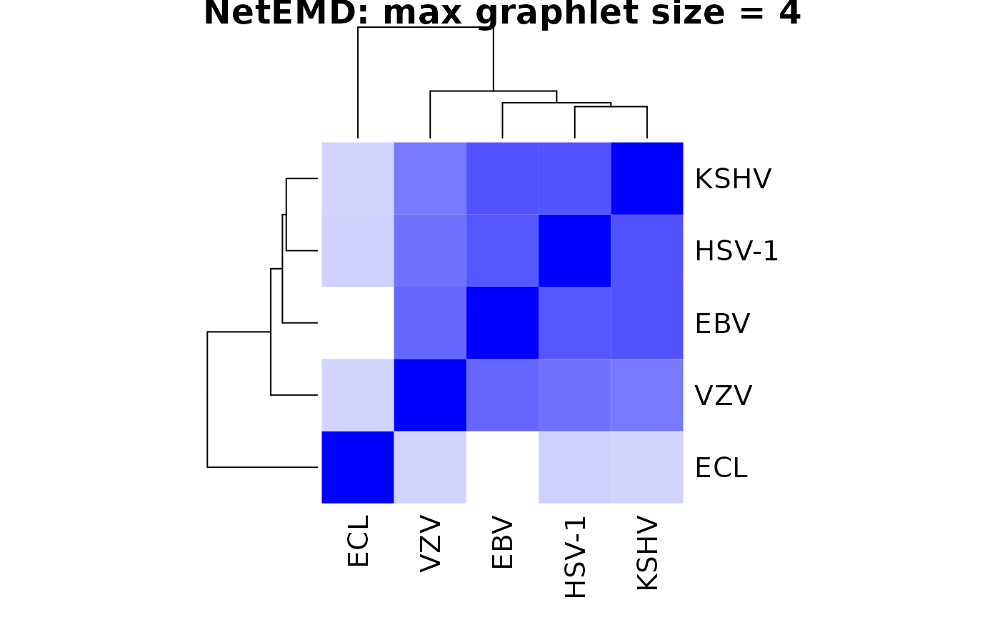

dendrogram_example_net_emd.Rmd
library("netdist")
# Set source directory and file properties for Virus PPI graph edge files
source_dir <- system.file(file.path("extdata", "VRPINS"), package = "netdist")
edge_format = "ncol"
file_pattern = ".txt"
# Calculate graphlet-based degree distributions for all orbits in graphlets
# comprising up to 4 nodes for all graphs. This only needs to be done once
# per graph (feature_type = "orbit", max_graphlet_size = 4)..
# If feature_type is set to "feature_type", orbit counts for orbits in the
# same graphlet will be summed to generate graphlet counts
# If max_graphlet_size is set to 5, graphlet-based degree distributions will
# be calculated for graphlets comprising up to 5 nodes.
virus_gdds <- gdd_for_all_graphs(
source_dir = source_dir, format = edge_format, pattern = file_pattern,
feature_type = "orbit", max_graphlet_size = 4)
names(virus_gdds)## [1] "EBV" "ECL" "HSV-1" "KSHV" "VZV"
# Compute NetEMDs between all virus PPI graphs based on the computed graphlet-
# based degree distributions using the default fast "optimise" method and no
# smoothing (default). The "optimise" method uses the built-in R optimise
# function to efficiently find the offset with the minimum EMD, but is not
# guaranteed to find the global minimum if EMD as a function of offset
# is non-convex and/or multimodal. The smoothing window width determines
# whether to calculate the NetEMD from the unaltered discrete GDD histograms
# (smoothing_window_width = 0; default) or to first apply "nearest neighbour"
# smoothing by "smearing" the discrete GDD histogram point masses across bins
# of unit width (smoothing_window_width = 1). Returns a named list containing:
# (i) the NetEMDs and (ii) a table containing the graph names and indices
# within the input GDD list for each pair of graphs compared.
res <- netemd_many_to_many(dhists= virus_gdds, smoothing_window_width = 0)## [1] "This function will compute orbits of graphlets up to size 5 using 2 cores. Depending on the density and size of the graphs, this may lead to a large compsumption of RAM."
# You can also specify method = "fixed_step" to use the much slower method of
# exhaustively evaluating the EMD at all offsets separated by a fixed step.
# The default step size is 1/2 the the minimum spacing between locations in
# either histogram after normalising to unit variance. However, you can
# specifiy your own fixed step using the optional "step_size" parameter.
# Note that this step size is applied to the histograms after they have been
# normalised to unit variance
# Convert to matrix for input to dendrogram method
netemd_mat <- cross_comp_to_matrix(res$netemds, res$comp_spec)
netemd_mat## EBV ECL HSV-1 KSHV VZV
## EBV 0.0000000 0.4876039 0.1662892 0.1607293 0.1994605
## ECL 0.4876039 0.0000000 0.3986281 0.4024176 0.4029344
## HSV-1 0.1662892 0.3986281 0.0000000 0.1581520 0.2164003
## KSHV 0.1607293 0.4024176 0.1581520 0.0000000 0.2323936
## VZV 0.1994605 0.4029344 0.2164003 0.2323936 0.0000000
cex=1
title = paste("NetEMD: max graphlet size = ", 4, sep = "")
plot(phangorn::upgma(as.dist(netemd_mat), method="average"), use.edge.length=FALSE,
edge.width=cex*2, main=title, cex.lab=cex, cex.axis=cex, cex.main=cex,
cex.sub=cex, cex=cex)
# The gdd_for_all_graphs and netemd_many_to_many functions will run in
# parallel using multiple threads where supported. The number of threads
# used is determined by the global R option "mc.cores". You can inspect the
# current value of this using options("mc.cores") and set it with
# options("mc.cores" = <num_cores>). To fully utilise a modern consumer
# processor, this should be set to 2x the number of available processor
# cores as each core supports two threads.
cex=1.5
col <- colorRampPalette(colors = c("blue","white"))(100)
title = paste("NetEMD: max graphlet size = ", 4, sep = "")
heatmap(netemd_mat, Rowv = NULL, Colv = NULL, col = col, main = title, cexRow = cex, cexCol = cex, symm = TRUE)